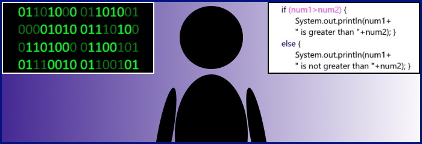

-- What is it? --
Software engineering is a course that revolves around allowing a student to understand how programs and software function, as well as be able to make their own. This involves multiple different modules all linked under the same goal of allowing students to be able to understand the inner workings of software and programs instead of simply being a user. Through this programme, students are able to develop practical skills related to software engineering, obtain in-depth knowledge of how certain systems work, and much more.
-- The beginning years --
As this is only the first semester, the current curriculum is more focused on letting students understand the foundations of these systems and how they work in order to allow for a more detailed understanding of them in the future. This involves learning the basics and fundamental elements of Java, HTML, and more. The creation of this website itself is part of this learning process too!